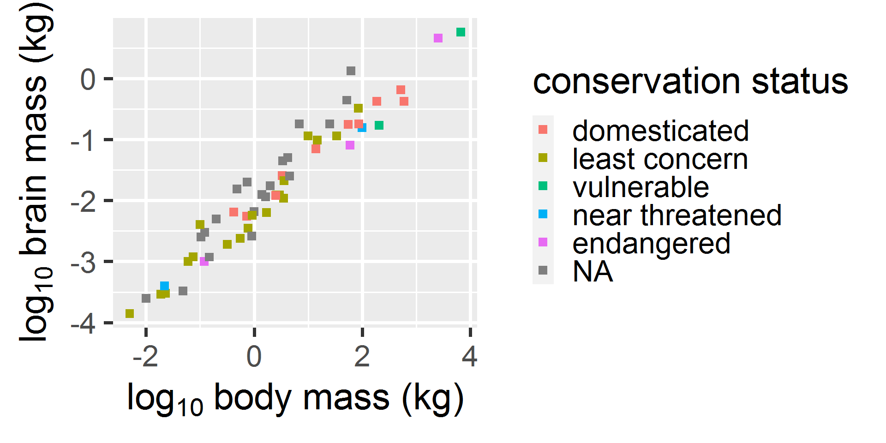
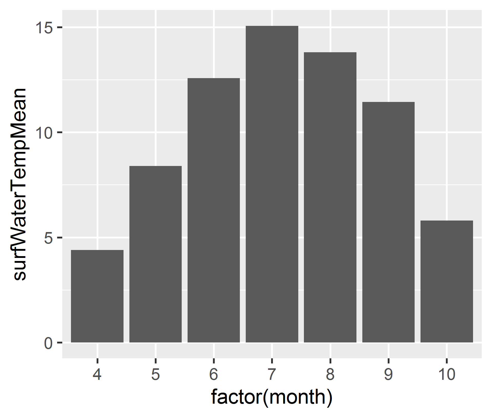
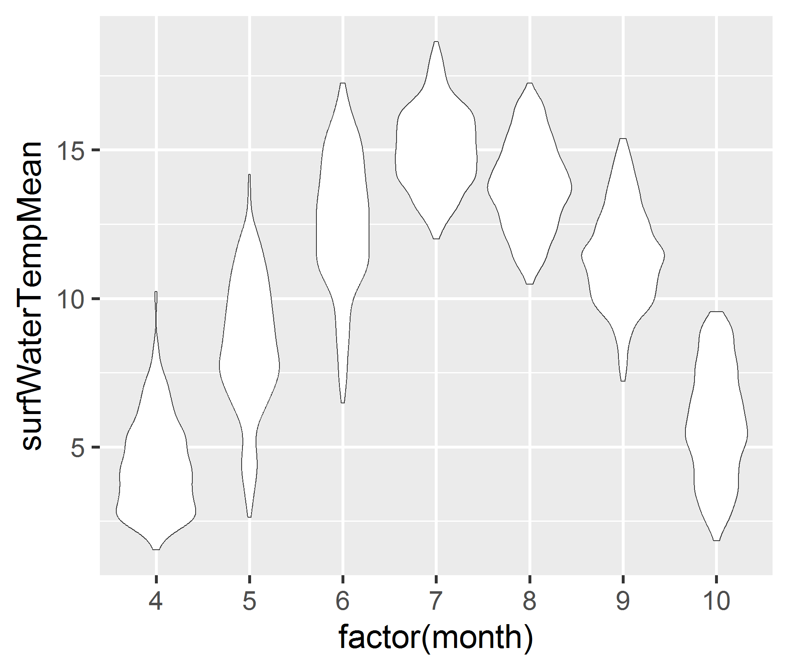

Chapter 6. Simple graphs with ggplot2
Overview
They say a picture is worth a thousand words; a good figure can replace them entirely.
Graphs aren’t just for the end results of a project; plotting data is one of the best ways to quickly explore it and the various relationships between variables.
There are three main plotting systems in R, the base plotting system, the lattice package, and the ggplot2 package.
Today we’ll be learning about the ggplot2 package, because it is the most effective for creating publication-quality graphics. It is also built from a consistent grammar that aligns with data science principles.
We will be working with surface water temperature and quality data from NEON’s Teakettle Creek site (National Ecological Observatory Network (NEON) (2023a), National Ecological Observatory Network (NEON) (2023b)).
What we will learn
In this lesson learners will:
- use ggplot2 to generate single-panel graphics with one data layer and one statistic layer
- manipulate the aesthetics of a ggplot using different colors, shapes, and lines
- use different geometries to change the way data is displayed in a ggplot
- export graphs in a specific format and size
Key Terms & Commands
- coordinate system
- geometries (geoms)
- aesthetics
- map or mapping
- axis labels
- legend
- mathematical expression
- raster vs. vector images
- image dimensions and resolution
ggplot()aes()geom_point(),geom_line(),geom_bar(),geom_boxplot(),geom_violinplot()labs()expression()ggsave()
Prerequisites
Before beginning this lesson you should have completed the lesson Vectorization and functions and any prerequisites therein.
Before you begin:
- Open the R-course-NEON-workbook RStudio project.
- Create a new R script named lesson_06_code.R in the lesson-code folder of the student workbook.
- Whenever you see R code like this:
- Whenever you see a challenge like this:
Try to solve the problem by writing R code into your script. Check your answer by clicking:
- Be sure to click Save often to save your work.
Lesson
Grammar of graphics
ggplot2 is built on the grammar of graphics, the idea that any plot can be expressed from the same set of components: a data set, a coordinate system, and a set of geoms – the visual representation of data points.
The key to understanding ggplot2 is thinking about a figure in layers. This idea may be familiar to you if you have used image editing programs like Photoshop, Illustrator, or Inkscape.
Begin by installing and loading the ggplot2 package:
The ggplot2 package includes a few datasets that we can
use without needing to read in additional data. One of these is called
msleep and contains information about sleep cycles in
mammals. Let’s take a look at these data to see what is included. In the
Environment panel, click on the object named msleep. This
will open a new tabe in the Source panel so that you can see what these
data look like.
name genus vore
Length:83 Length:83 Length:83
Class :character Class :character Class :character
Mode :character Mode :character Mode :character
order conservation sleep_total
Length:83 Length:83 Min. : 1.90
Class :character Class :character 1st Qu.: 7.85
Mode :character Mode :character Median :10.10
Mean :10.43
3rd Qu.:13.75
Max. :19.90
sleep_rem sleep_cycle awake
Min. :0.100 Min. :0.1167 Min. : 4.10
1st Qu.:0.900 1st Qu.:0.1833 1st Qu.:10.25
Median :1.500 Median :0.3333 Median :13.90
Mean :1.875 Mean :0.4396 Mean :13.57
3rd Qu.:2.400 3rd Qu.:0.5792 3rd Qu.:16.15
Max. :6.600 Max. :1.5000 Max. :22.10
NA's :22 NA's :51
brainwt bodywt
Min. :0.00014 Min. : 0.005
1st Qu.:0.00290 1st Qu.: 0.174
Median :0.01240 Median : 1.670
Mean :0.28158 Mean : 166.136
3rd Qu.:0.12550 3rd Qu.: 41.750
Max. :5.71200 Max. :6654.000
NA's :27 [1] 83 11This table has 83 rows, each corresponding to a different mammal
species. It has 11 columns with variables that provide taxonomic
information (genus, order), ecological
information (vore gives the diet type), conservation status
(conservation) and then five variables measuring
physiological characteristics. If we want to learn more about these data
we could open the help file.
We will demonstrate how to make graphs with the ggplot()
function using these data.
First, let’s make a scatterplot to examine the relationship between
brain mass (column brainwt) and body mass (column
bodywt).
# Scatterplot of brain mass vs. body mass
ggplot(data = msleep, mapping = aes(x = bodywt, y = brainwt)) +
geom_point()
Let’s figure out how that code produced the graph above. The
ggplot() function lets R know that we’re creating a new
plot, and any of the arguments we give the ggplot function
are the global options for the plot: they apply to all
layers on the plot.
We’ve passed in two arguments to ggplot. First, we tell
ggplot what data we want to show on our
figure, in this example the msleep data. For the second
argument (mapping), we used the aes()
function, which tells ggplot how variables in the data
correspond to aesthetic properties of the figure, in
this case the x and y locations. Here
we told ggplot we want to plot the bodywt
column of the msleep data frame on the x-axis, and the
brainwt column on the y-axis. By providing x and y, we have
set up the coordinate system for the plot. Notice that
we didn’t need to give aes() the actual vector of data in
the column (e.g. x = msleep$bodywt), this is because
ggplot knows to look in the obhect we passed to the
data argument for that column.
By itself, the call to ggplot() isn’t enough to draw a
figure.
This line of code sets up the coordinate system of the graph, but it
doesn’t add any visual layers to it. We need to tell
ggplot() how we want to visually represent the data, which
we do by adding a new geometry layer. In our example,
we used geom_point(), which tells ggplot() we
want to visually represent the relationship between x
and y as a scatterplot of points.
Modify the example above so that the figure shows how the number of
hours in rem sleep is related to the total number of hours asleep. Hint:
use ?msleep to learn which columns contain the variables
you need.
Solution:
# Scatterplot of REM sleep time vs total sleep time
ggplot(data = msleep, mapping = aes(x = sleep_total, y = sleep_rem)) +
geom_point()Warning: Removed 22 rows containing missing values or values outside the
scale range (`geom_point()`).
Notice that we receive a warning about missing values. This is telling
us that 22 rows of data were not plotted because one of the variables we
supplied contained a missing value (NA).
Aesthetics
In addition to the x and y coordinate
values, each point can take on other aesthetic properties, such as
color, shape and
size. We can modify each of these properties in two
ways; an aesthetic property can be set to be the same for all of the
points (for example make all points large red triangles), or an
aesthetic property can be mapped to a variable in the
data (for example, make the color of the point correspond to the diet of
the species).
First we will demonstrate how to change aesthetics for all points
using a graph of time in REM sleep versus total sleep time. To change an
aesthetic for all points, we specify use the aesthetic arguments in the
geom_point() function.
# Make all points large red triangles
ggplot(data = msleep, mapping = aes(x = sleep_total, y = sleep_rem)) +
geom_point(color = "red", size = 3, shape = 17)How did we know that shape = 17 would produce triangles?
R has a set of numerical shape codes, which are easy to find via a quick
internet search:

Symbols 0 through 14 produce outlines; symbols 15 - 20 produce filled shapes and symbols 21 - 25 produce shape where we can separately specify the color of the outline and fill.
Now let’s instead make the color of the point correspond to the diet
of the species found in the vore column. To do this, we
provide an aes() function to the mapping
argument of the geometry we are plotting (geom_point). The
aes() function tells the geom_point() function
that the aesthetic property of color should be related to
the values found in the vore column of
data.
# Make the color correspond to the diet type
ggplot(data = msleep, mapping = aes(x = sleep_total, y = sleep_rem)) +
geom_point(mapping = aes(color = vore))
The ggplot() function automatically chooses the colors to
use and produces a lengend. In NA
we will learn how to modify the colors used and text in the legend.
Create a scatterplot of hours in REM sleep versus total sleep hours
in which the size of the point is proportional to the species brain
mass. Hint: use the size argument.
If you completed the challenge above, you should have gotten a plot that looks like this:
Notice that the scale seems a bit off. There are a lot of small
points, but the legend seems to show that brain mass goes up to 5, even
though there there aren’t any large size points on the graph. This is
because brain mass ranges from 0.0014 - 5.71 kg in the
msleep data frame:
[1] NA NAHowever, the species that have this large of a brain mass are missing data on sleep and so are not included in the plot:
# A tibble: 2 × 11
name genus vore order conservation sleep_total sleep_rem
<chr> <chr> <chr> <chr> <chr> <dbl> <dbl>
1 Asian elep… Elep… herbi Prob… en 3.9 NA
2 African el… Loxo… herbi Prob… vu 3.3 NA
# ℹ 4 more variables: sleep_cycle <dbl>, awake <dbl>,
# brainwt <dbl>, bodywt <dbl>If we remake the graph using a data set that omits any species with missing sleep data, then the legend values for point size will rescale appropriately:
# Create a data subset that contains only rows where
# `sleep_total` and `sleep_rem` are not missing.
dat <- subset(msleep, !is.na(sleep_total) & !is.na(sleep_rem))
# Replot the data
ggplot(data = dat, mapping = aes(x = sleep_total, y = sleep_rem)) +
geom_point(mapping = aes(size = brainwt))Create a scatterplot of brain mass versus body mass where all of the
points are squares and in which the color of the points corresponds to
the conservation status of the species. Hint: use the
conservation column.
Fix the plot so that only data with non-missing values for the x and
y variables used are shown (e.g. bodywt,
brainwt are not NA).
Solution:
# Subset the data to plot to remove missing values
dat <- subset(msleep, !is.na(bodywt) & !is.na(brainwt))
# A graph of brain mass vs. body mass with
# the point shape corresponding to the taxonomic order of each species
ggplot(data = dat, mapping = aes(x = bodywt, y = brainwt)) +
geom_point(mapping = aes(color = conservation), shape = 15)If you solved the challenge above, your graph should look like this:
This graph is hard to see because the x and y variables are very skewed, with many species of smaller mass and few species with larger mass. Let’s graph the log_10(mass) instead of mass to make the patterns clearer.
# Subset the data to plot to remove missing values
dat <- subset(msleep, !is.na(bodywt) & !is.na(brainwt))
# A graph of brain mass vs. body mass with
# the point shape corresponding to the taxonomic order of each species
ggplot(data = dat, mapping = aes(x = log10(bodywt), y = log10(brainwt))) +
geom_point(mapping = aes(color = conservation), shape = 15)
Changing axis labels
You probably noticed that by default ggplot() chooses
axis and legend labels that match the names of the columns supplied as
the variables. We can change this behavior with the labs()
function. In the code below, we add (+) the
labs() function to the plot. Then inside the
labs() function, we specify the name of each aesthetic
variable we want to change the label of (x, y,
and color) and these arguments are separated by commas.
ggplot(data = dat, mapping = aes(x = log10(bodywt), y = log10(brainwt))) +
geom_point(mapping = aes(color = conservation), shape = 15) +
labs(x = "log10 body mass (kg)",
y = "log10 brain mass (kg)",
color = "conservation status")Notice that we put each argument in labs() on a separate
line. This was just to make the code easier to read. We could have
written:
When building plots with ggplot() your code will be
easier to read (and troubleshoot) if you only put one argument per line.
For example, here’s the entire code for the same plot formatted in this
way:
ggplot(data = dat,
mapping = aes(x = log10(bodywt),
y = log10(brainwt))) +
geom_point(mapping = aes(color = conservation),
shape = 15) +
labs(x = "log10 body mass (kg)",
y = "log10 brain mass (kg)",
color = "conservation status")Mathematical notation
We can also use mathematical expressions to label plot axes. Instead of log10 body mass, we could have the plot display the 10 as a subscript: log10 body mass. Expressions are also useful for specifying units that have powers (for example m2).
Mathematical notation is specified by constructing mathematical
expressions using the expression() function. Let’s add
expressions to the labs() function to make the x and y axis
labels prettier. In an expression we must use a ~ symbol to
add space between characters.
ggplot(data = dat,
mapping = aes(x = log10(bodywt),
y = log10(brainwt))) +
geom_point(mapping = aes(color = conservation),
shape = 15) +
labs(x = expression(log[10]~"body mass (kg)"),
y = expression(log[10]~"brain mass (kg)"),
color = "conservation status")If you want to learn more about using mathematical annotation in R,
run demo(plotmath) in the console. Press Enter when
prompted and you will see examples of mathematical expressions appear in
the Plots panel.
Factor levels
The last set of labels we should fix are the labels for the levels of
conservation status. The codes in this data are from the IUCN Red List of Threatened
Species. As currently shown, it is hard to know what the two letter
codes mean. The ggplot() function is labeling the colors
using the factor levels in the conservation column of
dat. Recall from Data
structures and operations that a factor is a categorical variable
with pre-defined levels.
When we pass conservation to the color
aesthetic, the function automatically converts it to a factor and the
levels are just the values present in the vector.
[1] "domesticated" "en" "lc" "nt"
[5] "vu" If we make the conservation column into a factor and
define our own more informative levels, then the aes()
function will use our more informative level names to label the
legend.
We can rename the levels of a factor by supplying a list to the
levels() function. Each element of this list matches one of
the levels in the factor and the names of the list elements correspond
to the new factor levels we want to use. Notice that we needed to use a
backtick (```) around list element names that had spaces in them.
# Convert conservation to a factor with informative level names
dat$conservation <- factor(dat$conservation)
levels(dat$conservation ) <- list(domesticated = "domesticated",
`least concern` = "lc",
vulnerable = "vu",
`near threatened` = "nt",
endangered = "en")
# View the first 10 elements
dat$conservation[1:10] [1] <NA> least concern domesticated domesticated
[5] least concern least concern domesticated domesticated
[9] least concern <NA>
5 Levels: domesticated least concern ... endangeredNow when we create the graph, the new factor levels are used in the legend.
ggplot(data = dat,
mapping = aes(x = log10(bodywt),
y = log10(brainwt))) +
geom_point(mapping = aes(color = conservation),
shape = 15) +
labs(x = expression(log[10]~"body mass (kg)"),
y = expression(log[10]~"brain mass (kg)"),
color = "conservation status") The order in which we specified the levels determined the order in which colors were assigned.
[1] "domesticated" "least concern" "vulnerable"
[4] "near threatened" "endangered" Geometries
So far we have only made a scatterplot, but ggplot2 can
create a variety of graphics for displaying different types of data.
Temporal data are often displayed as a line graph to show changes in a
variable over time. Let’s use the NEON surface water temperature from
Teakettle Creek to demonstrate (see (NEON
data product DP1.20053.001) for more info).
After loading the data below, you may want to click on
watertemp in the Environment panel to remind yourself what
these data look like.
# Load the lubridate package for working with dates and times
library(lubridate)
# Load surface water temperature data for
watertemp <- read.csv("data/NEON_water/watertemp_30min_TECR_2021-04_2021-10.csv")
# Convert startDateTime to a date-time class
watertemp$startDateTime <- ymd_hms(watertemp$startDateTime)
# Subset the data to just one sensor
watertemp_upstream <- subset(watertemp, horizontalPosition == 101)
# Graph mean temperature over time
ggplot(data = watertemp_upstream,
mapping = aes(x = startDateTime,
y = surfWaterTempMean)) +
geom_line()Modify the code for the graph above to give more informative x and y axis labels. The temperature is in degrees Celsius.
Hint: expression(degree*C) will give \(^{\circ}\)C.
ggplot2 can also make bar graphs. Bar graphs are
typically used to show variation among categories. For example, suppose
we wanted to compare the mean surface water temperatures across months.
First we would need to calculate the average water temperature for each
month. Then we could use these mean values to construct a bar graph.
Luckily the geometries in ggplot2 have built-in ways to
calculate these summary statistical for us.
Statistical summaries
In order to summarize water temperature across months, we first need to create a variable in the data frame that indicates which month the measurement was taken.
# Create a column identifying the month
watertemp_upstream$month <- month(watertemp_upstream$startDateTime)
# How many observations were there each month?
table(watertemp_upstream$month)
4 5 6 7 8 9 10
1440 1488 1440 1488 1488 1440 1488 Now we want a bar graph with month on the x axis and
surfWaterTempMean on the y axis, but we want to show this
as a bar where the height of the bar is the mean value of all
measurements that occurred within a month. To do this we use the
geom_bar() geometry and specify that we want to use a
summary statistic (stat = "summary") to calculate the
height of the bar and that the specific statistic we want to use is the
mean() function.
ggplot(data = watertemp_upstream,
mapping = aes(x = factor(month), y = surfWaterTempMean)) +
geom_bar(stat = "summary", fun = mean)
A more informative graph to show similar information is a violin plot, which shows the median value together with information about the distribution of a variable within each category. This allows the reader to see the central tendency along with the range and skew of the data.
ggplot(data = watertemp_upstream,
mapping = aes(x = factor(month), y = surfWaterTempMean)) +
geom_violin()
Notice that we use x = factor(month) and not
x = month. This is to tell aes() that we want
it to treat the numeric months as a category and not as a continuous
numeric variable.
Boxplots provide similar, but slightly less information:
ggplot(data = watertemp_upstream,
mapping = aes(x = factor(month), y = surfWaterTempMean)) +
geom_boxplot()
Bar plots can also be used to display the number of observations in
different categories of data. For example, what if we were interested in
the viewing the number of erroneous measurements each month? The
finalQF column is a quality control variable that is equal
to 1 when a value has a data quality issue.
Let’s make a bar plot that counts the number of
finalQF == 1 rows in each month. To do this we will map the
fill color aesthetic to the finalQF variable. But, we must
tell the aes() function to treat finalQF as a
categorical factor and not as a numerica variable.
ggplot(data = watertemp_upstream,
mapping = aes(x = factor(month))) +
geom_bar(aes(fill = factor(finalQF)))We can see that most erroneous measurements for this upstream sensor occured in July (month 7) and September (month 9).
Modify the stacked bar graph above to have more informative axis and legend labels.
Solution:
Here’s one way to do this:
# Convert finalQF to a factor and specify the levels
watertemp_upstream$finalQF <- factor(watertemp_upstream$finalQF)
levels(watertemp_upstream$finalQF) <- list(Good = 0,
Erroneous = 1)
# Count the number of observations in each month
# with good vs. erroneous data
ggplot(data = watertemp_upstream,
mapping = aes(x = factor(month))) +
geom_bar(aes(fill = finalQF)) +
labs(x = "Month",
y = "Num. observations",
fill = "")Exporting graphs
We’ve learned how to make a lot of graphs in a (relatively) short period of time. Now the most important part- how do you get a graph out of R to use in a document or presentation?
There are several strategies to export graphics from R. In the Plots panel, you can click Export and a window will open walking you through how to save a file. However, I recommend specifying the file export in your code itself so that you can easily go back and change the size and format of file you want.
R has several graphics devices that you can use to save any kind of plot (not just ggplots) to file. Vector formats are pdf and svg. These image types save points and lines as actual points and lines so that when you zoom in they do not become grainy. In contrast, raster formats include png, jpg and tiff. These are best used for photographs or maps because these use pixels of different colors to represent an image. Because of this, raster images are saved at a particular resolution, measured in pixels per unit length (e.g. inch). Since the graphs we have made thus are are just points and lines, a vector format is most appropriate, but we will try a raster format for comparison as well. Let’s try a couple formats to see the difference between them: pdf, svg and png.
The easiest way to save a ggplot is to call the function
ggsave() immediately after creating the graph. This
function will export the most recently created graph to a file using the
arguments specified.
# Graph mean temperature over time
ggplot(data = watertemp_upstream, mapping = aes(x = startDateTime, y = surfWaterTempMean)) +
geom_line() +
labs(x = "Time",
y = expression("Temperature"~(degree*C) ))
# Save the plot as a pdf measuring 4 x 6 inches
ggsave(filename = "TECR mean water temp.pdf",
path = "results",
width = 6, height = 4, units = "in")
# Save the plot as a svg measuring 4 x 6 inches
ggsave(filename = "TECR mean water temp.svg",
path = "results",
width = 6, height = 4, units = "in")
# Save the plot as a png measuring 4 x 6 inches with 300 pixels per inch
ggsave(filename = "TECR mean water temp.png",
path = "results",
width = 6, height = 4, units = "in", dpi = 300)The path = "results" argument tells
ggsave() to save the file in a folder in the current
working directory named “results”. The file extension (.pdf, .svg, .png)
tells ggsave() which graphics device to use. Notice that we
specified the resolution of the png file using the argument
dpi = 300, which stands fo “dots per inch”. 300 DPI is a
typical resolution for most printed applications.
Navigate there should be three new files in the results folder in the R-course-NEON-workbook folder. Use your computers file browser to find and open these.
Export the figure above as a pdf, but double the dimensions so that the file is 12 x 8 inches.
Open this new file. What do you notice about the size of the axis labels and lines?
Solution:
# Save the plot as a pdf measuring 12 x 8 inches
ggsave(filename = "TECR mean water temp big.pdf",
path = "images",
width = 12, height = 8, units = "in")Because we increased the size of the page without changing the size of the lines, the lines appear much thinner and the text much smaller in the file with the larger dimensions.
Treat generated output as disposable
Anything generated by your scripts (such as figures, intermediate data tables, etc) should be treated as disposable: it should all be able to be regenerated from your scripts. That way, you don’t have to manually redo any image or data processing steps if you need to update the data later.
There are lots of different ways to manage this output. Having an output folder with different sub-directories for each separate analysis makes it easier later. Use the results folder in the R-course-NEON-workbook folder to organize graphs generated by your code.
Exercises
After completing these exercises, learners will be able to use the ggplot2 package in R to:
- create a scatter plot
- create a line graph
- create a bar chart showing a statistical summary within categories
- create a stacked bar chart showing counts within categories
- create a boxplot
- map aesthetics to data values
- write axis labels with mathematical notation
- export graphs to a vector-format image with specific dimensions
The following exercises work with data on water quality from the Teakettle Creek NEON site. See NEON data product DP1.20288.001 for more info.
Before solving the exercises load these data into a data frame named
wq using the following code:
# Load Teakettle Creek water quality data
wq <- read.csv("data/NEON_water/waterqual_inst_TECR_2021-04_2021-10.csv")Be sure to include this line of code at the beginning of each R script you submit so that your code will work.
Note that these data contain measurements from two sensors; an
upstream sensor (horizontalPosition == 101) and a
downstream sensor (horizontalPosition == 102).
IMPORTANT: Before making any of the plots below, you
should also filter the data to remove any erroneous measurements. Each
variable has a FinalQF column associated with it. If this
column is 0 then the data are good and should be kept. For
example, the following will create a dataframe of measurements where the
dissolved oxygen variables are good (and omit and erroneous
measurements)
You could then use use_dat as the data for the
ggplot.
6.1
Create a scatter plot showing the relationship between chlorophyll and dissolved oxygen. Make the color of the point correspond to the location of the sensor (upstream or downstream).
Your plot should have informative axis labels with units; chlorophyll is measured in micrograms per liter and dissolved oxygen is in milligrams per liter. The color legend should have an informative title and display the location of the sensor as a categorical variable and not as a continuous number.
NOTE: You should filter the data before plotting it to remove
erroneous measurements of chlorophyll or dissolved oxygen. The
FinalQF columns for these variables indicate whether data
are good; dissolvedOxygenFinalQF == 0 corresponds to good
dissolved oxygen data and `
6.2
Create a scatter plot showing the change in pH over time. There should be two lines, one fore each sensor location, and the color of the line should correspond to the sensor location.
Your plot should have informative axis labels. The color legend should have an informative title and display the location of the sensor as a categorical variable and not as a continuous number.
6.3
Create a bar chart that compares the average chlorophyll content measured at each sensor location.
Your plot should have informative axis labels with units; chlorophyll is measured in micrograms per liter.
6.4
Fill in the blanks in the code below to produce this graph:
# Load Teakettle Creek water quality data
wq <- read.csv("data/NEON_water/waterqual_inst_TECR_2021-04_2021-10.csv")
# Redefine factor levels for finalQF
wq$dissolvedOxygenFinalQF <- factor(wq$dissolvedOxygenFinalQF)
levels(wq$dissolvedOxygenFinalQF) <- list(________ = 0,
________ = 1)
# Compare data quality of DO between two sensors
ggplot(data = wq,
mapping = aes(x = _________________)) +
________(aes(fill = ___________________)) +
labs(x = _____________,
y = _____________,
_____ = "Data quality")This graph compares the number of good versus erroneous dissolved
oxygen measurements between the two sensor locations. No data were
omitted from wq prior to making this graph.
6.5
Create a chart that compares the distribution of dissolved oxygen measurements across months (e.g. a boxplot or violin plot). Measurements from the two sensors should be combined for each month.
Your plot should have informative axis labels with units; dissolved oxygen is measured in milligrams per liter.
6.6
Update your code for exercise 1, 3, or 5 so that the units in the axis labels are displayed using mathematical notation: \(\mu g~ L^{-1}\) or \(mg~L^{-1}\).
6.7
Export one of the graphs you produced in this exercise as a pdf with dimensions 6 x 5 inches.
Sources and Resources
This lesson was written by Jes Coyle and adapted from Zimmerman et al. (2019) episode 8.
Additional Resources
Cited References
Introduction to Computing in R with NEON